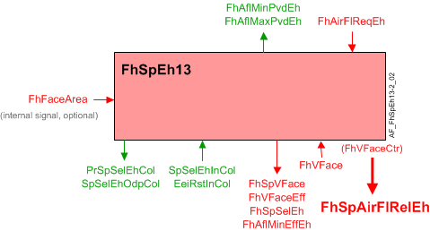

通风柜排气设定点、面风速和窗扇传感器 (FhSpEh13)
Overview
应用功能》Fume hood exhaust setpoint 13, face velocity and sash area" (FhSpEh13）用于根据窗扇传感器和面速度传感器的组合确定排气量设定值。每一个都用于单独计算排气流量设定点的值。较大的值是有效排气流量设定值。排气流量设定值还受到操作员通过 ODP 调整的输入、房间排气需求和通风柜操作模式的影响（FhOpMod).
此 AF 没有任何与物理设备关联的输出。该 AF 的主要模拟输出是计算值对象：
- Exhaust volume setpoint (FhSpAirFlEh), also present on chart output pin
- Relative exhaust volume setpoint (FhSpAirFlRelEh), also present on chart output pin
- Face velocity setpoint (FhSpVFace)
- Effective face velocity (FhVFaceEff)
主要特点：
- Exhaust volume setpoint
- Calculated face velocity
Function

| 命令或请求（或相关） |
| 条件或状态或可用性的通知 |
| 设备模式 |
| 互锁（内部信号，不是 BACnet 对象；有关其他信息，请参阅互锁部分） |


Exhaust setpoint selection：排气设定值选择（FhSpSelEh) 是可配置的多状态过程值：
- Off
- Auto
- Setpoint 1
- Setpoint 2
- Setpoint 3
当 ODP 上的设定点调整功能激活时，可以从 ODP 调整 FhSpSelEh。
该应用程序监视多状态计算值对象、排气设定值选择输入值（FhSpSelEh），连接到 ODP。应用程序将在两个多状态过程值对象上写入排气设定值选择的当前状态，将排气设定值选择写入 ODP (SpSelEhOdpCol）和当前排气设定值选择（PrSpSelEhCol).
配置扩展参数确定手动设定点的值； SpOff、设定点 1、设定点 2 和设定点 3。其他参数配置每个手动设定点的单位。
单位选项 | 枚举值 |
|---|---|
m/s | 74 |
ft/min | 77 |
% | 98 |
ft3/min | 84 |
l/s | 87 |
m3/h | 135 |
- If a velocity setpoint is selected (m/s or ft/min), the manual setpoint will be used to calculate the exhaust airflow setpoint based on the sash face area.
- If % is selected, the manual setpoint will be a percentage of the current auto setpoint.
- If an airflow setpoint is selected (ft3/min, l/s, or m3/h), the manual setpoint will be set equal to the value.
设定点 1、设定点 2 和设定点 3 将受到最小排气流量设定点的限制，关闭设定点将允许设置为 0。
从 ODP 接收到的手动设定值 Off、Setpoint 1、Setpoint 2 或 Setpoint 3 会更新FhSpSelEh并将优先级设置为 13。从 ODP 接收到的自动设定值将放弃优先级 13FhSpSelEh并将值更新为优先级 15。
手动设定点根据更改设置为自动FhOpMod和RlqManSpSelEh。手动设定值可以在以下情况下释放：FhOpMod更改为“关闭”或“低风量流量”。如果设定点配置为触发紧急吹扫，则不会释放手动设定点。
ManOpLockCnf定义何时锁定 ODPFhOpMod。用户设定点选择将通过设置通风柜排气设定点选择的优先级来锁定（FhSpSelEh) 到 12。优先级被传递到SpSelEhOdp和PrSpSelEh.
FhSpSelEh当前优先级 | 排气设定点选择为 ODP | 当前排气设定值选择 |
|---|---|---|
<13 | 12 | 12 |
13 | 13 | 13 |
>13 | 15 | 15 |
SpSelEhLoAirFl定义如何FhSpSelEh将被设置时FhOpMod改变为低风量流量。
- When the configuration extension item is set to disabled, no action is taken.
- If the configuration extension item is set to off, setpoint 1, setpoint 2, or setpoint 3, the exhaust setpoint selection will be set to that value.
- The FhSpSelEh will return to Auto when the FhOpMod changes to Control.
Emergency purge:如果配置扩展项设置为关闭、设定点 1、设定点 2 或设定点 3，并且排气设定点选择设置为该值，SpEmgPrg已打开。
Note:
QMX3.P88 通风柜操作显示屏没有用于紧急吹扫的特定按钮。配置扩展项EmgPrgCnf允许使用手动设定点之一来激活紧急吹扫。
Exhaust airflow request from room: 由于实验室温度或实验室气流要求，通风柜设定值可能需要增加。实验室将发出通风柜需求请求，以保持适当的压力。
房间的排风量要求（FhAirFlReqEh）只会改变排气流量设定值（FhSpAirFlEh）当排气设定点选择（FhSpSelEh) 设置为自动。
通风柜最小（FhAflMinPvdEh）和最大气流提供的信号（FhAflMaxPvdEh）由房间收集。如果通风柜未配置为允许房间调整通风柜设定点，则提供的气流信号将设置为零。
排气请求可以改变通风柜的最小设定值。
Face velocity setpoint:当手动设定值（Sp1, Sp2orSp3) 通过排气设定点选择激活并配置为速度（m/s 或 ft/min），然后FhSpVFace将被设置为等于该手动设定点的值。
当手动设定点未激活并且FhOpMod设置为低气流的时间长于切换到空闲设定值的延迟时间 (DlyOnSpUcd), theFhSpVFace设置为等于FhUcdSpVFace，否则它被设置为等于FhOcdSpVFace.
当通风柜运行模式（FhOpMod）被设置为触发，面速度设定点将根据以下情况设置为优先级 2：SpEhFire.
当FhOpMod设置为紧急或打开时，面速度设定值将根据优先级 2 设置SpEmgPrg.
Face velocity control:排气流量设定值是使用速度传感器和窗扇传感器单独计算的。这两个计算使用相同的面速度设定值。较高的值是有效排气流量设定值。
该应用程序读取称为“面速度传感器”或“穿墙传感器”的传感器来测量代表面速度的空气速度（FhVFace）。护罩开放面区域的平均速度可能与通过传感器测量的速度显着不同。该应用程序包括一个可配置的转换，用于根据感测到的速度计算代表性面速度、滤波器常数和校正因子，用于将原始测量的面速度转换为测量的面速度（FhVFaceEff）。仅当有效面速度设置为有效时FhVFace是有效的。
该应用应用级联反馈回路将计算出的面速度驱动至面速度设定值。面速度环路是外环路，计算排气流量内环路的设定值。外环输出0-100%代表从通风柜风量最小到最大的排风量设定值，然后将百分比值转换为风量体积值，该值进一步与根据面积计算的排风量SP进行比较，以选择较大者进行排风风门调节（串级控制的内环）。
当排气量设定点不受环路控制时，环路将不允许结束。
Exhaust airflow setpoint: 当FhOpMod设置为“控制”时，排气设定值选择为“自动”，且平衡状态为非平衡，则排气风量设定值（FhSpAirFlEh) 使用面速度设定点计算。计算出的设定点受到有效最小和最大排气流量设定点的限制。
排气流量设定点的优先级是根据通风柜操作模式对象的优先级设置的。
通风柜运行模式优先 | 排气量设定点优先 |
|---|---|
1-3 | 2 |
4-6 | 5 |
7-15 | 15 |
Emergency alarm exhaust volume setpoint:紧急吹扫排气设定点（SpEmgPrg) 是配置扩展，以设定值的百分比形式输入。当通风柜设备模式设置为紧急且平衡状态为不平衡时，FhSpAirFlEh使用占据的面速度设定点计算并受到最小排气流量的限制。
面风速控制器的输出最大值、基于面面积的计算值以及排气流量最小值用于排气量设定值。
Decommission exhaust volume setpoint: 当通风柜操作模式设置为“关闭”时FhSpAirFlEh将被设置为 0。
Balancing mode exhaust volume setpoint:如果平衡命令（VavEhBalCmd) 设置为平衡，排气流量设定值 (FhSpAirFlEh）由平衡模式（VavEhBalMod).
Relative setpoint:通风柜的相对气流设定值是计算出的模拟值，根据通风柜气流的标称（额定）值标准化为排气气流设定值的百分比，其中 100% 等于标称值，相对值不限于 100%。
Energy efficiency indication:如果选择的手动设定点导致排气流量设定点高于自动设定点，则设定点 AF 通知 ODP 设置能效指标（绿叶）（EeiRstInCol) 至差 (2)。
如果平衡命令（VavEhBalCmd) 是平衡或通风柜操作模式 (FhOpMod) 为火灾、紧急净化或开放时，能效指示器（绿叶）设置为未定义 (1)。
如果以上条件都不存在，则能效指标（绿叶）将设置为良好（4）。
如果能效指示器复位按钮（REeiRstIn当高手动设定值指示灯亮起时，按下 ），手动设定值将被释放并使用自动设定值。
Configuration
 Objects
Objects
描述 | 目的 | 类型 | 默认值 |
|---|---|---|---|
Fume hood unoccupied face velocity setpoint 0...20 [米/s], 0...3937 [英尺/min] | FhUcdSpVFace | ACnfVal | 0.41 [m/s] |
Fume hood occupied face velocity setpoint 0...20 [米/s], 0...3937 [英尺/min] | FhOcdSpVFace | ACnfVal | 0.41 [m/s] |
Fume hood exhaust manual air volume flow setpoint | FhSpAirFlManEh | ACnfVal | 100 [m3/h] |
 Parameters
Parameters
描述 | 范围 | 默认值 |
|---|---|---|
Emergency purge setpoint | SpEmgPrg | 150 [%] |
Fire exhaust setpoint | SpEhFire | 50 [%] |
Time for increasing exhaust air volume flow setpoint | TiIcrSpAirFlEh | 0 [s] |
Time for decreasing exhaust air volume flow setpoint | TiDcrSpAirFlEh | 0 [s] |
Attenuation filter face velocity | AtnFltVFace | 2 [s] |
Switch-on delay to unoccupied setpoint | DlyOnSpUcd | 30 [s] |
Minimum air volume flow setpoint by room request | SpAirFlMinReq | 0 [m3/h] |
Unit for setpoint off 1:m/s | SpOffUnit | 5:% |
Setpoint off | SpOff | 100 |
Unit for setpoint 1 枚举见SpOffUnit | Sp1Unit | 5:% |
Setpoint 1 | Sp1 | 100 |
Unit for setpoint 2 枚举见SpOffUnit | Sp2Unit | 5:% |
Setpoint 2 | Sp2 | 100 |
Unit for setpoint 3 枚举见SpOffUnit | Sp3Unit | 5:% |
Setpoint 3 | Sp3 | 100 |
Emergency purge configuration ▶ 用于模拟 P88 ODP 上的紧急最大按钮。 | EmgPrgCnf | 1:Disabled |
Exhaust setpoint selection on low air volume flow 枚举见EmgPrgCnf | SpSelEhLoAirFl | 1:Disabled |
Relinquish manual mode on exhaust setpoint selection ▶ 当 FhOpMod = RlqManSpSelEh 值时，手动设定值将被释放，设定值选择将返回自动。如果设定点配置为紧急吹扫，则不会释放手动设定点。 | RlqManSpSelEh | 2:Off |
Manual operation lock configuration 枚举见RlqManSpSelEh | ManOpLockCnf | 2:Off |
Retain manual setpoint after power failure 0:No | ManSpAfPwrFail | 0:No |
Air volume flow unit | AirFlUnit | [m3/h] |
Interface
界面 | 描述 | 类型 | 参考号 | 拥有者 | |
|---|---|---|---|---|---|
FhSashSwiCol | Collection of fume hood sash switch | ColView | ● | - | |
| FhSashSwiRs | Result of fume hood sash switch 0:Closed | BCalcVal | ● | - |
FhSashSwi | Fume hood sash switch 0:Closed | BI | ◉ | Room segment / Field device | |
FhVFace | Fume hood face velocity | AI | ◉ | Room segment / Field device | |
FhSpAirFlEh | Fume hood exhaust air volume flow setpoint | APrcVal | ● | - | |
FhSpAirFlRelEh | Fume hood exhaust setpoint for relative air volume flow | ACalcVal | ● | - | |
FhSpVFace | Fume hood face velocity setpoint | APrcVal | ● | - | |
FhSpSelEh | Fume hood exhaust air setpoint selection 1:Off | MPrcVal | ● | - | |
FhVFaceEff | Fume hood effective face velocity | ACalcVal | ● | - | |
FhAirFlReqEh | Fume hood exhaust air volume flow request from room | ACalcVal | ● | - | |
FhAflMinEffEh | Fume hood exhaust effective minimum air volume flow | ACalcVal | ● | - | |
FhAflMaxPvdEh | Fume hood maximum provided air volume flow for exhaust | ACalcVal | ● | - | |
FhAflMinPvdEh | Fume hood minimum provided air volume flow for exhaust | ACalcVal | ● | - | |
FhVFaceCtr | Fume hood face velocity controller | 控制器 | ● | - | |
EeiRstInCol | Collection of reset energy efficiency indicator input value | ColView | ● | - | |
| EeiRstInRs | Result of reset energy efficiency indicator input value 0:Off | BCalcVal | ● | - |
EeiRstIn | Reset energy efficiency indicator input value 0:Off | BCalcVal | ◉ | Room segment / Field device | |
SpSelEhInCol | Collection of exhaust air setpoint selection input value | ColView | ● | - | |
| SpSelEhInRs | Result of exhaust air setpoint selection input value 1:Off | MCalcVal | ● | - |
SpSelEhIn | Exhaust air setpoint selection input value 1:Off | MI | ◉ | Room segment / Field device | |
SpSelEhOdpCol | Collection of exhaust air setpoint selection to ODP | ColView | ● | - | |
| SpSelEhOdp | Exhaust air setpoint selection to ODP 1:Off | MO | ◉ | Room segment / Field device |
PrSpSelEhCol | Collection of present exhaust air setpoint selection | ColView | ● | - | |
| PrSpSelEh | Present exhaust air setpoint selection 1:Off | MPrcVal | ◉ | Room segment / Field device |
FhEei | Fume hood energy efficiency indication 1:Undefined | MCalcVal | ◉ | Hvac16 | |
FhUcdSpVFace | Fume hood unoccupied face velocity setpoint | ACnfVal | ● | - | |
FhOcdSpVFace | Fume hood occupied face velocity setpoint | ACnfVal | ● | - | |
FhSpAirFlManEh | Fume hood exhaust manual air volume flow setpoint | ACnfVal | ● | - | |
Engineering and commissioning
选修的。